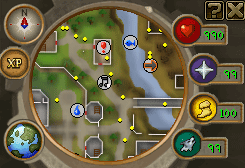
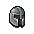
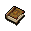
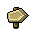

")
Grundlagen
Einführung
RuneScape besitzt ein sehr effektives und leistungsfähiges Steuerungssystem. Wenn man sich erst einmal mit den unterschiedlichen Aspekten des Systems vertraut gemacht hat, geht alles fast von alleine.
Gehen und rennen
Auf RuneScape könnt ihr euch mit eurer Maus bewegen. Bei Mäusen mit einer Taste müsst ihr den Zeiger an die Stelle bewegen, an die ihr euren Charakter bewegen wollt und dann klicken. Bei Mäusen mit zwei oder mehr Tasten, müsst ihr den Zeiger an die Stelle bewegen, an die ihr euren Charakter bewegen wollt und die linke Maustaste klicken.
![[Bild]](../../img/main/kbase/controls/how_to_move.gif) Jetzt sollte sich euer Spielcharakter in Bewegung setzen. An der Stelle, an der er wieder anhalten wird, erscheint kurz ein kleines, gelbes 'X'.
Jetzt sollte sich euer Spielcharakter in Bewegung setzen. An der Stelle, an der er wieder anhalten wird, erscheint kurz ein kleines, gelbes 'X'. Ihr könnt auch rennen. Haltet 'STRG' gedrückt, während ihr die Stelle anklickt, zu der ihr euch bewegen wollt.
Wenn ihr euch schneller umherbewegen wollt, könnt ihr auch einstellen, dass euer Charakter so lange läuft, bis er keine Ausdauer mehr hat. Dieses Feature kann im Spieloptionsfenster aktiviert werden oder indem ihr auf das Symbol für 'Rennen' neben eurer Minikarte klickt. Mehr Informationen dazu gibt es unter Optionen.
Auf RuneScape könnt ihr eigentlich fast alles mit der Maus steuern. Wenn ihr die Standardaktion für einen Gegenstand durchführen wollt, bewegt die Maus darüber und klickt die Aktions-Maustaste. Die Aktions-Maustaste ist die linke Maustaste auf einer Maus mit mehreren Tasten und die einzige Maustaste auf einer Maus mit nur einer Taste. Wenn ihr nur eine Maustaste habt, müsst ihr danach die erste Option aus dem Menü auswählen, um die Standardaktion auszuführen.
Wenn ihr eure Maus über etwas bewegt, verändert sich der Mauszeiger. Fahrt ihr z. B. über etwas, das ihr benutzen könnt, verwandelt er sich in eine Hand. Wenn ihr etwas aufheben könnt, wird er zum Pfeil (mit Tasche). Diese Symbole stehen für die Standardaktion, die ausgeführt wird, wenn ihr auf etwas linksklickt (mit einer Maus mit mehreren Tasten) bzw. auf etwas klickt und dann die oberste Option auswählt (mit einer Maus mit einer Taste).

Ein rotes Kreuz erscheint kurz, um die von euch gewünschte Aktion zu bestätigen. Manchmal dauert es ein paar Augenblicke, bevor euer Charakter die Aktion ausführt. In der Abbildung rechts hat der Spieler seinen Charakter darum gebeten, die Münzen zu nehmen, die auf dem Boden liegen.
In RuneScape können mit Gegenständen häufig mehrere Aktionen ausgeführt werden. Um eine Alternative zur Standard-Aktion eines Gegenstands anzuzeigen und auszuwählen, sollte ein Spieler, der eine Maus mit mehreren Tasten besitzt, auf die rechte Maustaste klicken, während der Zeiger sich über dem Gegenstand befindet. Es wird dann ein Menü von anderen Handlungen angezeigt, die mit diesem Gegenstand möglich sind. Spieler, die eine Maus mit nur einer Taste verwenden, bekommen dieses Optionsmenü immer angezeigt.
Das Spielfenster

Name |
Bedeutung |
| Minikarte, Kompass und Weltkarte | Eine Minikarte mit einem Kompass, damit ihr euch auf RuneScape besser zurechtfindet. Bei Klick auf die Kugel mit der Weltkarte öffnet sich eine Karte von RuneScape in eurem Spielfenster. Wenn ihr auf den Kompass klickt, wird die Kamera wieder nach Norden ausgerichtet. |
| Statuskugeln | Eine Anzeige eurer Werte, die verbraucht werden können (Trefferpunkte, Gebetspunkte, Energie und Beschwörungspunkte - letztere sind nur sichtbar, wenn ihr euch auf einer Mitglieder-Welt befindet und das Abenteuer 'Der sich den Wolf pfeift' abgeschlossen habt). |
| Ausloggen | Mit dem Symbol 'X' am oberen rechten Spielfensterrand könnt ihr euch ausloggen. |
| Beratersystem | Über das '?'-Symbol in der oberen rechten Ecke eures Spielfensters könnt ihr das Beratersystem erreichen. |
Spielfenster |
Das Hauptfenster, durch das ihr RuneScape betrachtet. |
| Chatfenster | Der untere Teil des Spielfensters, in dem man Mitteilungen von anderen Spielern sehen und beantworten kann. Dort sieht man einige Schaltflächen, mit denen man kontrollieren kann, wie Chat und Spielmeldungen angezeigt werden. |
| Aktionsfenster | Der rechte untere Teil des Spielfensters. Hier könnt ihr auf weitere Teile des Spiels zugreifen und Einstellungen verändern. |
Aufenthaltsort
Wenn ihr euch bestimmten Gebieten auf RuneScape nähert, erscheint ein Symbol unten rechts im Spielfenster, das anzeigt, um was für ein Gebiet es sich handelt. Das Symbol bleibt sichtbar, bis ihr das Gebiet wieder verlasst.
Hier ist eine Tabelle mit all den Symbolen, die angezeigt werden können, und ihren Bedeutungen:
| Gebiet | Symbol | Bedeutung |
| Duell-Arena | Ihr habt die Duell-Arena betreten. | |
| Multikampf-Zone | ![[Bild]](../../img/main/kbase/controls/multicombat_symbol.gif) |
Ihr habt einen Bereich betreten, in dem ihr mit mehr als einem Gegner kämpfen könnt. |
| Rattengruben | Ihr befindet euch in den Rattengruben. | |
| Wildnis | ![[Bild]](../../img/main/kbase/controls/wilderness.gif) |
Ihr befindet euch in der Wildnis. |
Minikarte und Statuskugeln

Man kann sich auch durch RuneScape bewegen, indem man auf die Minikarte klickt. Das ist besonders hilfreich, wenn man längere Strecken zurücklegen möchte, als im Spielfenster möglich ist.
Rechts neben der Minikarte befinden sich die Statuskugeln, mit denen ihr ganz schnell Informationen über eure Trefferpunkte, Gebetspunkte, Ausdauer und Beschwörungspunkte (dafür muss das Abenteuer 'Der sich den Wolf pfeift' abgeschlossen worden sein) finden könnt. Die Zahlen verändern je nach Status ihre Farbe (wenn ihr verletzt werdet oder Punkte ausgebt) und die Kugel für Trefferpunkte blinkt, wenn ihr nicht mehr viele übrig habt.
Die Trefferpunkte-Anzeige verändert ihre Farbe, wenn ihr vergiftet wurdet oder eine Krankheit habt (sie wechselt von grün auf gelb). Falls ihr einen Trank besitzt, der den Zustand aufheben kann, müsst ihr nur auf die Kugel klicken, um den Trank zu trinken. Dabei werden Fläschchen mit weniger verbleibenden Dosen zuerst benutzt.
Ihr könnt auch auf das Rennen-Symbol neben der Minikarte klicken, um zu rennen oder auf das Gebets-Symbol, um eine Gebets-Schnellauswahl zu treffen. Wenn ihr das Rennen-Symbol rechtsklickt und 'Ausruhen' wählt, füllen sich eure Ausdauer und Trefferpunkte schneller wieder auf. Das geschieht sogar noch schneller, wenn ihr euch in der Nähe eines Barden ausruht.
Außerdem könnt ihr das Beschwörungssymbol neben der Minikarte euren Wünschen entsprechend einstellen. Rechtsklickt auf das Symbol und wählt 'Wähl Linksklick-Option' und entscheidet euch für eine der folgenden Optionen: Infos zum Begleiter, Spezialangriff, Angreifen, Herbeirufen, Wegschicken, Lasttier entladen und Zeitguthaben aufladen. Trefft eure Wahl und bei jedem Linksklick auf das Symbol wird dann die von euch festgelegte Funktion ausgeführt. Außerdem lässt sich das Beschwörungsfenster als eine der Rechtsklick-Optionen aufrufen.
Wenn ihr die Kamera schwenkt, dreht sich auch die Minikarte in die Richtung, in die ihr gerade schaut. Dies ist nicht unbedingt dieselbe Richtung, in die euer Charakter gerade blickt oder in die er sich bewegt.
So könnt ihr zum Beispiel die Kamera Richtung Norden schwenken, um zu sehen, was es dort gibt, während euer Charakter sich nach Osten bewegt.
Die Minikarte zeigt eure nähere Umgebung - dazu gehören Gebäude, Straßen, Nicht-Spieler-Charaktere, Informationssymbole usw.
Eine Legende der Symbole ist unter Die Weltkarte in der Spielanleitung zu finden.
Die folgende Tabelle erklärt, was all die farbigen Punkte auf der Minikarte bedeuten:
Name |
Bedeutung |
Rote Fahne |
Zuletzt angewählter Zielort. |
Roter Punkt |
Gegenstände, die man aufheben kann. |
Weißer Punkt |
Andere Spieler. |
Grüner Punkt |
Spieler, die in eurer Freunde-Liste stehen. |
Gelber Punkt |
Monster und Nicht-Spieler-Charaktere. |
Blauer Punkt |
Andere Spieler, die den gleichen Team-Umhang tragen wie ihr. |
Lilafarbener Punkt |
Andere Spieler aus eurem Clanchat. |
Objekte in der Landschaft wie Bäume, Zäune und Steine haben alle ihre eigene Grafik, um einem die Orientierung zu vereinfachen.
Bestimmte nützliche Orte wie Abenteuer-Anfänge, Banken und Eingänge zu Höhlen sind auf der Karte mit Symbolen verzeichnet.
Weitere Informationen über die Weltkarte im Spiel findet ihr hier.
Schaltflächen
Über die Schaltflächen könnt ihr auf euer Inventar und andere Einstellungen im Spiel zugreifen. Jedes Symbol steht für einen Bereich im Spiel, den ihr konfigurieren oder beeinflussen könnt.
Name |
Schnelltaste |
Erklärung |
Kampf |
F5 | Hier könnt ihr eure Kampfstrategie festlegen. |
Statistik |
Keine | Zeigt euch alle Fertigkeiten und die Stufe, auf der ihr euch jeweils gerade befindet. |
Abenteuerübersicht |
Keine | Zeigt eine Liste mit allen Abenteuern an, egal ob ihr sie angefangen, abgeschlossen oder noch gar nicht gespielt habt. |
Aufgabenliste |
Keine | Zeigt eine Liste der Aufgabenliste und wie viel ihr in den verschiedenen Schwierigkeitsstufen bereits erledigt habt. |
Inventar |
F1 | Hier könnt ihr auf euer Inventar zugreifen. |
|  Ausrüstung |
F2 | Hier könnt ihr auf eure Ausrüstung zugreifen. |
Gebete |
F3 | Hier könnt ihr auf eure Gebete zugreifen. |
|  Zaubersprüche |
F4 | Zeigt Informationen zu den Zaubersprüchen, die ihr sprechen könnt. |
|  Ziele |
Keine | Setzt eurer Spielfigur ein Ziel. |
Freunde-Liste |
Keine | Hier könnt ihr die Liste eurer Freunde verwalten und euch privat mit ihnen unterhalten. |
Ignorieren-Liste |
Keine | Hier könnt ihr eure Ignorieren-Liste verwalten. |
Clanchat |
Keine | Darüber könnt ihr euren Chatraum für Gruppengespräche verwalten. |
Spieloptionen |
Keine | Hier könnt ihr verschiedene Einstellungen am Spiel ändern. |
Gesten |
Keine | Hier könnt ihr euren Charakter verschiedene Gefühle oder Ideen durch Gesten beschreiben lassen (z.B.: Winken, Tanzen, etc). |
Musik |
Keine | Hier könnt ihr auf die Musik im Spiel zugreifen. |
Notizen |
Keine | Damit könnt ihr euch Informationen aufschreiben und sie leicht abrufen. |

Weitere Artikel in Steuerung
|
|
|
Weiterführende Informationen Wenn euch dieser Artikel nicht weitergeholfen hat, könnt ihr in den folgenden Kapiteln der RuneScape-Webseite mehr Informationen finden:
|
|